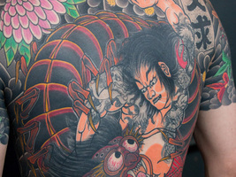
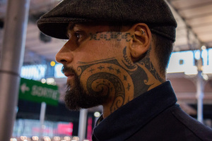
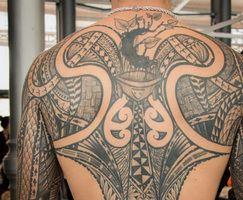
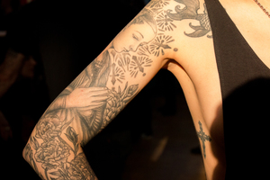
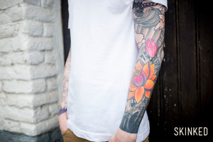

News
Tatouages japonais

Lors de mon passage sur le Mondial du Tatouage, j’ai flashé sur ces tatouages japonais qui recouvre quasi l’entièreté du torse et dos du jeune homme. On retrouve sur son corps les motifs emblématique du tatouage Japonais tel que les samouraïs, tigres ou dragons. Le tigre et le dragon sont tout deux considérés comme symbole de force protectrice.
A l’origine du tatouage Japonais, le tatouage était utilisé comme emblème des clans de samouraïs mais également un moyen d’identification lors des guerres civiles.
A l’origine du tatouage Japonais, le tatouage était utilisé comme emblème des clans de samouraïs mais également un moyen d’identification lors des guerres civiles.
Tatouage samoa

Lors de mon passage sur le Mondial du Tatouage, j’ai également rencontré Julien, tatoueur basé à Amsterdam et adepte du tatouage Samoan.
Originaire des îles de Samoa, le tatouage Samoan est un art qui n’a cessé d’être pratiqué, et ce depuis le 14e siècle. La technique traditionnel veux que le tatouage soit fait aux peignes et maillet. Les motifs traditionnels tiennent inspiration des dessins retrouvés sur les anciennes poteries Lapita.
Originaire des îles de Samoa, le tatouage Samoan est un art qui n’a cessé d’être pratiqué, et ce depuis le 14e siècle. La technique traditionnel veux que le tatouage soit fait aux peignes et maillet. Les motifs traditionnels tiennent inspiration des dessins retrouvés sur les anciennes poteries Lapita.
Tatouage polynaisien

Le Mondial du Tatouage, c’est également l’occasion de rencontrer des personnes aux tatouages atypiques et impressionnants. Tout comme cette rencontre avec Hughes qui n’a pas longtemps hésité avant de nous montrer l’ampleur de ces tatouages polynésiens. Réalisé par le tatoueur Manao Tiki, également présent lors du Mondial, les tatouages de Hughes ont été dessinés à même la peau. La technique du « free-hand » est au pratique qui permet au tatoueur de dessiné directement sur le corps du tatoué et ce afin qu’il soit adapté à la morphologie de celui-ci.
C’est ainsi que sur le corps de Hughes les motifs de ces tatouages suivent les courbes de son corps, comme par exemple sur ses biceps. Ce qui m’a frappé dans ces tatouages c’est comment le dessin se démarque des traits épais qu’on a l’habitude de voir dans le tatouage polynésien. Ici on retrouve des motifs traditionnels comme notamment les tressés des paniers en osiers. Mais jugez par vous-même la beauté de ce tatouage qui recouvre une grand partie du corps de Hughes.
C’est ainsi que sur le corps de Hughes les motifs de ces tatouages suivent les courbes de son corps, comme par exemple sur ses biceps. Ce qui m’a frappé dans ces tatouages c’est comment le dessin se démarque des traits épais qu’on a l’habitude de voir dans le tatouage polynésien. Ici on retrouve des motifs traditionnels comme notamment les tressés des paniers en osiers. Mais jugez par vous-même la beauté de ce tatouage qui recouvre une grand partie du corps de Hughes.
Lise

C’est lors du Mondial du Tatouage que nous avons croisé la pétillante Lise au tatouages plus qu’intéressants!
J’ai tout de suite apprécié l’homogénéité des ses tattoos : encrés uniquement en noir et dans le même style et soucis du détail. Motifs floraux, certains d’inspiration japonaise, coeur et attrape rêves, l’ensemble des tattoos mène à une certaine sérénité et à l’admiration tant ceux-ci ont été réalisés à la perfection. Clin d’oeil au tempérament de la jeune femme : le tatouage « Live free and crazy! ». Je dois dire que c’est le tatouage qui correspond au mieux de ces quelques minutes échangés avec Lise. Sourire, dynamisme, j’ai adoré discuté avec elle.
Egalement entouré de motifs floraux, on découvre un impressionnant cerf qui, par l’ampleur de ses cornes, couvre l’entièreté du dos de Lise.
J’ai tout de suite apprécié l’homogénéité des ses tattoos : encrés uniquement en noir et dans le même style et soucis du détail. Motifs floraux, certains d’inspiration japonaise, coeur et attrape rêves, l’ensemble des tattoos mène à une certaine sérénité et à l’admiration tant ceux-ci ont été réalisés à la perfection. Clin d’oeil au tempérament de la jeune femme : le tatouage « Live free and crazy! ». Je dois dire que c’est le tatouage qui correspond au mieux de ces quelques minutes échangés avec Lise. Sourire, dynamisme, j’ai adoré discuté avec elle.
Egalement entouré de motifs floraux, on découvre un impressionnant cerf qui, par l’ampleur de ses cornes, couvre l’entièreté du dos de Lise.
Jonathan

Notre tatoué du jour est Jonathan, jeune passionné de tatouage. Il décrit cette passion comme une drogue à laquelle il ne peux se passer.
Tatoué sur l’entièreté des deux bras dans un style japonais par le salon de tatouage La Main Bleue, ces tatouages représentent sur le bras droit le bien et sur le gauche le mal.
Cette passion du tatouage, Jonathan l’a attrapé dès ces 19 ans et avec comme premier tattoo, son signe astrologique tatoué dans la nuque.
Tatoué sur l’entièreté des deux bras dans un style japonais par le salon de tatouage La Main Bleue, ces tatouages représentent sur le bras droit le bien et sur le gauche le mal.
Cette passion du tatouage, Jonathan l’a attrapé dès ces 19 ans et avec comme premier tattoo, son signe astrologique tatoué dans la nuque.